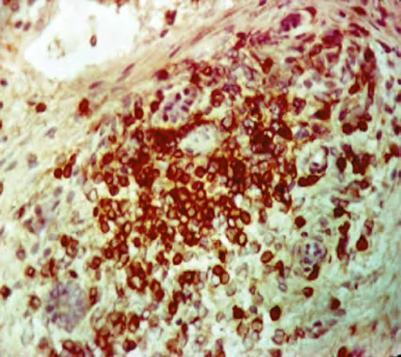

نسخه استخراجشده؛ ترجمه یا تأیید علمی انجام نشده است. وضعیت: captured
سلولهای لانگرهانس و دندریتیک آنتیژنهای باکتریایی را میگیرند، به گره لنفاوی میبرند و به لنفوسیتها معرفی میکنند. اینجا نقطه اتصال ایمنی ذاتی و اکتسابی است.

| زیرگروه | سایتوکاین شاخص | نقش در پریودنشیوم |
|---|---|---|
| Th1 | IFN-γ | ایمنی سلولی؛ عمدتاً محافظتی |
| Th2 | IL-4، IL-5 | کمک به تولید آنتیبادی |
| Th17 | IL-17 | تخریبی؛ محرک قوی RANKL و تحلیل استخوان |
| Treg | IL-10، TGF-β | تنظیمی و مهارکننده التهاب |
📌 نکته کلیدی: سرنوشت بافت را توازن بین Th17 و Treg تعیین میکند. غلبه Th17 یعنی تخریب؛ غلبه Treg یعنی مهار.
لنفوسیت B پس از فعال شدن به پلاسماسل تمایز مییابد و آنتیبادی تولید میکند.
پلاسماسل سلول غالب ضایعه مستقر و پیشرفته است؛ حضور فراوان آن نشانه التهاب مزمن است.
⚠️ نکته مهم: لنفوسیت B و پلاسماسل خودشان هم RANKL تولید میکنند؛ یعنی سلولهای ایمنی مستقیماً در تحلیل استخوان شریکاند.
| پیشالتهابی (تخریبی) | ضدالتهابی (تنظیمی) |
|---|---|
| IL-1β — محرک قوی تحلیل استخوان | IL-10 |
| TNF-α | TGF-β |
| IL-6 | IL-4 |
| IL-17 (از Th17) |
📌 بیماری زمانی پیشرفت میکند که ترازو به نفع پیشالتهابیها سنگین شود.
مهمترین درس این یونیت: پاسخ ایمنی ذاتاً خوب یا بد نیست؛ تنظیمشده بودن آن تعیینکننده است.
پاسخ متناسب و کنترلشده: باکتری مهار میشود و بافت سالم میماند. این وضعیت سلامت است.
پاسخ بیش از حد یا نامتوازن: باکتری همچنان باقی میماند اما بافت خودی تخریب میشود. این پریودنتیت است.
پاسخ در الگوی پاسخ میزبان است؛ عواملی که این الگو را تعیین میکنند: ژنتیک، سیگار، دیابت، استرس و تغذیه. همین موضوع پل ورود به بحث عوامل خطر است.
⚠️ اشتباه رایج ۱: پلاسماسل سلول غالب ضایعه مستقر است، نه ضایعه اولیه.
⚠️ اشتباه رایج ۲:Th17 نقش تخریبی و Treg نقش مهاری دارد؛ این دو را جابهجا نکن.
⚠️ اشتباه رایج ۳: لنفوسیت B و پلاسماسل هم RANKL تولید میکنند؛ تحلیل استخوان فقط از مسیر استئوبلاست نیست.